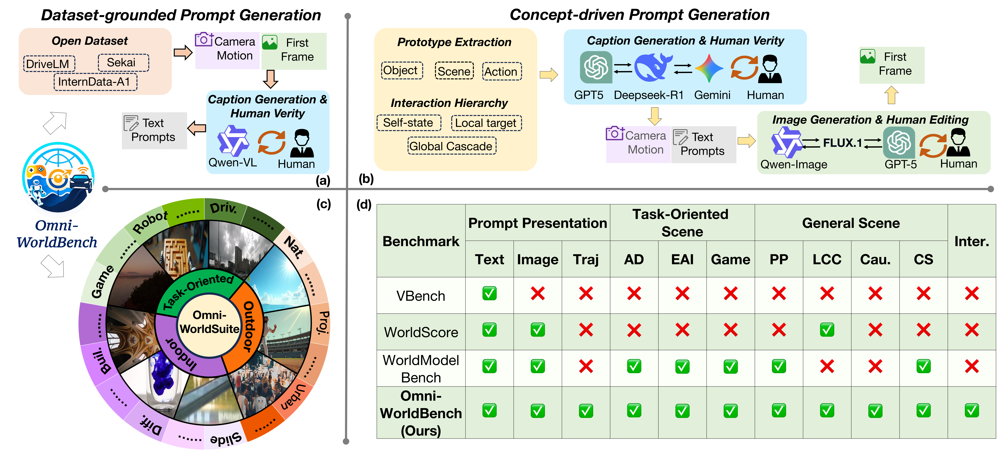
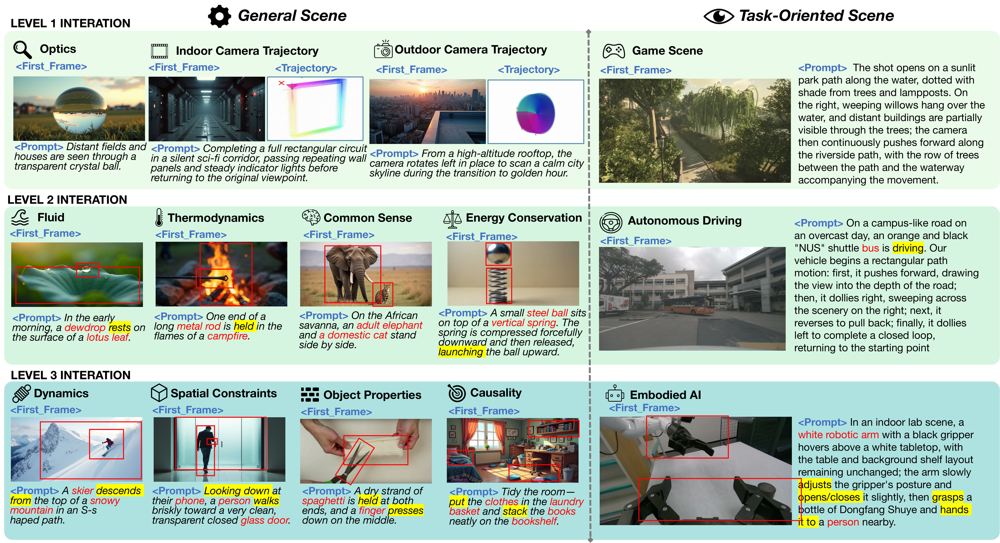
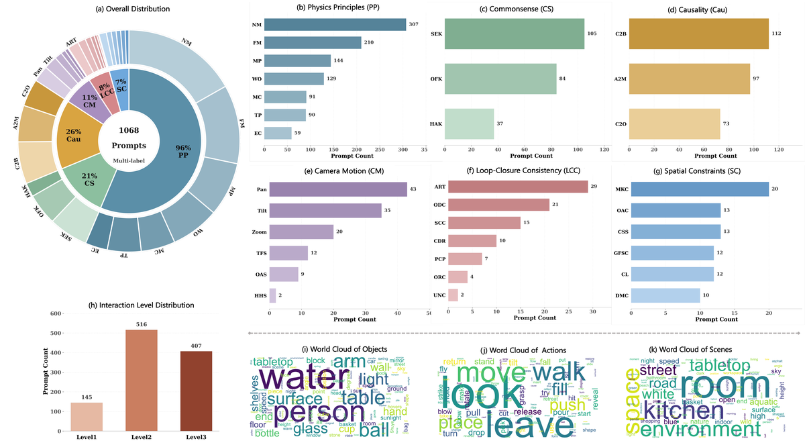
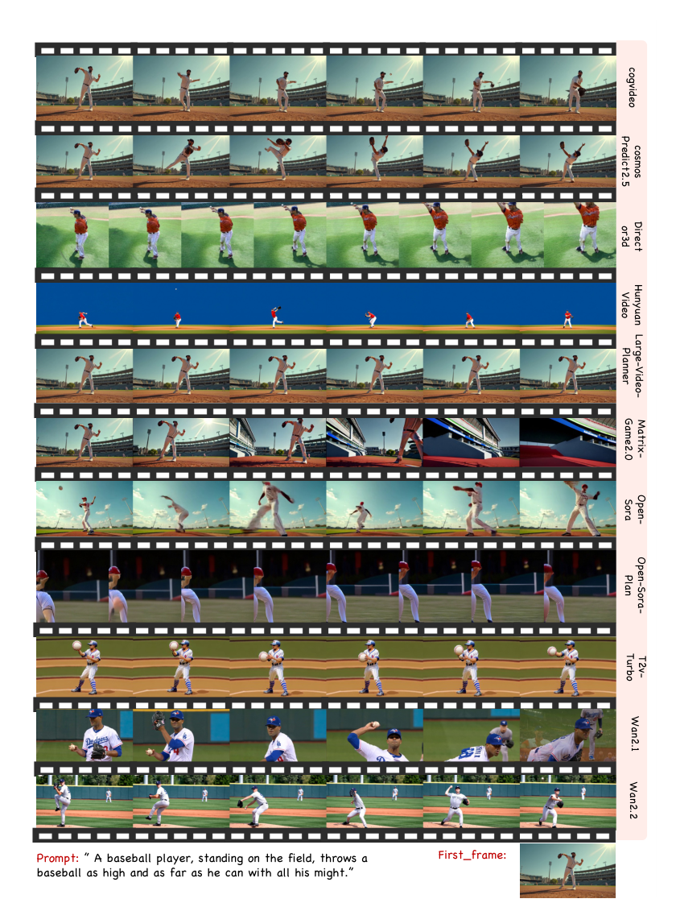
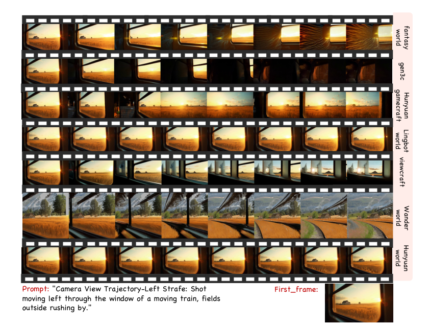

Omni-WorldBench
简单摘要
基于视频的世界模型已经沿着两个主要范式出现：视频生成和 3D 重建。然而，现有的评估基准要么狭隘地关注生成模型的视觉保真度和文本视频对齐，要么依赖于从根本上忽略时间动态的静态 3D 重建指标。我们认为世界建模的未来在于 4D 生成，它联合建模空间结构和时间演化。在这个范式中，核心能力是交互响应：能够忠实地反映交互动作如何驱动跨空间和时间的状态转换。然而，现有的基准还没有系统地评估这个关键维度。为了解决这一差距，我们提出了 Omni-WorldBench，这是一个综合基准，专门用于评估 4D 设置中世界模型的交互响应能力。
Omni-WorldBench 包含两个关键组件： Omni-WorldSuite，一个跨越不同交互级别和场景类型的系统提示套件； Omni-Metrics，一个基于代理的评估框架，通过测量交互行为对最终结果和中间状态演化轨迹的因果影响来量化世界建模能力。我们对跨多个范式的 18 个代表性世界模型进行了广泛的评估。我们的分析揭示了当前世界模型在交互响应方面的关键局限性，为未来的研究提供了可行的见解。
Omni-WorldBench 将公开发布，以促进交互式 4D 世界建模的进步。


简而言之，这篇论文关注的核心是：基于视频的世界模型已经沿着两个主要范式出现：视频生成和 3D 重建。然而，现有的评估基准要么狭隘地关注生成模型的视觉保真度和文本视频对齐，要么依赖于从根本上忽略时间动态的静态 3D 重建指标。我们认为世界建模的未来在于 4D 生成，它联合建模空间结构和时间演化。在这个范式中，核心能力是交互响应：能…
世界模型旨在描述给定交互条件下环境状态的时间演变，为反事实推理、规划和决策提供基础。利用视频生成领域的最新进展，该范式越来越多地采用视频合成作为核心实现途径。通过利用高质量的通用视频表示来模拟世界动态，基于视频的世界模型已广泛应用于自动驾驶、体现智能和游戏代理，大大加速了这些领域的进展。与世界模型设计的快速进展不同，专用评估基准的开发似乎有些滞后。现有的评估方法很大程度上依赖于传统的视频生成指标，例如FID和FVD，或者采用通用评估基准（例如VBench）。
尽管这些指标在衡量视觉保真度和文本视频对齐方面很有效，但它们并没有充分捕捉世界模型的核心能力——在不同的交互条件下生成一致且合理的响应的能力。为了全面评估世界模型的交互响应能力，我们提出了一个新的基准，Omni-WorldBench（图）。其核心是，我们构建了一个系统提示套件 Omni-WorldSuite，旨在全面评估跨不同交互级别和场景类型的模型性能。具体来说，交互条件可以产生仅限于单个对象的效果，扩展到局部环境，或引起全局环境变化。
这些逐渐增加的交互范围对世界模型提出了不同的表征和动态建模要求。因此，Omni-WorldSuite 中的评估提示是围绕这三个分层交互级别系统组织的。此外，由于世界建模是一种广泛且依赖于应用的研究范式，因此现有的研究通常基于自动驾驶、实体机器人和游戏环境等特定领域。为了确保 Omni-WorldSuite 适用于通用视频生成模型和特定场景的世界模型，我们的评估提示还涵盖真实世界的物理设置以及代表性应用领域。
为了补充 Omni-WorldSuite，我们建立了全面有效的评估协议 Omni-Metric，旨在全面评估世界状态表示的保真度和一致性。与之前的作品不同……
核心创新
综合引言与方法部分，这篇论文的核心创新可以概括为以下几方面：
1）问题定义与研究动机
世界模型旨在描述给定交互条件下环境状态的时间演变，为反事实推理、规划和决策提供基础。利用视频生成领域的最新进展，该范式越来越多地采用视频合成作为核心实现途径。通过利用高质量的通用视频表示来模拟世界动态，基于视频的世界模型已广泛应用于自动驾驶、体现智能和游戏代理，大大加速了这些领域的进展。与世界模型设计的快速进展不同，专用评估基准的开发似乎有些滞后。现有的评估方法很大程度上依赖于传统的视频生成指标，例如FID和FVD，或者采用通用评估基准（例如VBench）。尽管这些指标在衡量视觉保真度和文本视频对齐方面很有效，但它们并没有充分捕捉世界模型的核心能力——在不同的交互条件下生成一致且合理的响应的能力。为了全面评估世界模型的交互响应能力，我们提出了一个新的基准，Omni-WorldBench（图）。其核心是，我们构建了一个系统提示套件 Omni-WorldSuite，旨在全面评估跨不同交互级别和场景类型的模型性能。具体来说，交互条件可以产生仅限于单个对象的效果，扩展到局部环境，或引起全局环境变化。这些逐渐增加的交互范围对世界模型提出了不同的表征和动态建模要求。因此，Omni-WorldSu…
2）方法框架与核心模块
Omni-WorldBench：对世界模型进行全面的以交互为中心的评估 Meiqi Wu‡1,2,5，Zhixin Cai‡3,5，Fufangchen Zhao‡4,5，Xiaokun Feng2，Rujing Dang5，Bingze Song5，Ruitian Tian5，Jiashu Zhu5，Jiachen Lei5，Hao Dou5，Jing Tang5，Lei Sun5，Jiahong Wu*5，Xiang箱楚5，Zeming Liu3，Kaiqi黄*2 1 中国科学院大学计算机科学与技术学院 2 中国科学院复杂系统认知与决策智能重点实验室 3 北京航空航天大学计算机科学与工程学院 4 北京邮电大学网络与交换技术国家重点实验室 5 阿里巴巴集团 摘要 基于视频的世界模型沿着视频生成和 3D 重建这两个主导范式出现。然而，现有的评估基准要么狭隘地关注生成模型的视觉保真度和文本视频对齐，要么依赖于从根本上忽略时间动态的静态 3D 重建指标。我们认为世界建模的未来在于 4D 生成，它联合建模空间结构和时间演化。在这个范式中，核心能力是交互响应：能够忠实地反映交互动作如何驱动跨…
3）实验设计与工程价值
模型和评估协议评估模型。跨不同的生成任务，即文本到视频（T2V；Director3D、OpenSoraPlan、T2V-Turbo、HunyuanVideo）、图像到视频（IT2V；Matrix Game2.0、Wan2.1、Wan2.2、CogVideo、OpenSora、Cosmos、LargeVideoPlanner）和摄像机控制生成（HunyuanWorld、HunyuanGameCraft） 、 ViewCrafter 、 Gen3C 、 Lingbot 、 FantasyWorld 、 WonderWorld ）——我们评估了总共 18 个具有代表性的世界模型，包括基于扩散、自回归和混合范式。评估协议。我们使用我们提出的基准 Omni-WorldBench 全面评估世界模型的生成能力。评估协议由 Omni-Metric（在第 2 节中定义）驱动，涵盖三个不同维度的 15 个指…
技术细节
下面按照论文的方法章节结构展开，重点说明模型的关键模块、公式设计和训练策略。
Omni-WorldBench：对世界模型进行全面的以交互为中心的评估 Meiqi Wu‡1,2,5，Zhixin Cai‡3,5，Fufangchen Zhao‡4,5，Xiaokun Feng2，Rujing Dang5，Bingze Song5，Ruitian Tian5，Jiashu Zhu5，Jiachen Lei5，Hao Dou5，Jing Tang5，Lei Sun5，Jiahong Wu*5，Xiang箱楚5，Zeming Liu3，Kaiqi黄*2 1 中国科学院大学计算机科学与技术学院 2 中国科学院复杂系统认知与决策智能重点实验室 3 北京航空航天大学计算机科学与工程学院 4 北京邮电大学网络与交换技术国家重点实验室 5 阿里巴巴集团 摘要 基于视频的世界模型沿着视频生成和 3D 重建这两个主导范式出现。然而，现有的评估基准要么狭隘地关注生成模型的视觉保真度和文本视频对齐，要么依赖于从根本上忽略时间动态的静态 3D 重建指标。我们认为世界建模的未来在于 4D 生成，它联合建模空间结构和时间演化。在这个范式中，核心能力是交互响应：能够忠实地反映交互动作如何驱动跨空间和时间的状态转换。然而，现有的基准还没有系统地评估这个关键维度。为了解决这一差距，我们提出了 Omni-WorldBench，这是一个综合基准，专门用于评估 4D 设置中世界模型的交互响应能力。 OmniWorldBench 包含两个关键组件： Omni-WorldSuite，一个跨越不同交互级别和场景类型的系统提示套件； Omni-Metrics，一个基于代理的评估框架，通过测量交互行为对最终结果和中间状态演化轨迹的因果影响来量化世界建模能力。我们对跨多个范式的 18 个代表性世界模型进行了广泛的评估。我们的分析揭示了当前世界模型在交互响应方面的关键局限性，为未来的研究提供了可行的见解。 Omni-WorldBench 将公开发布，以促进交互式 4D 世界建模的进步。 1 引言 世界模型旨在描述给定交互条件下环境状态的时间演变，为反事实推理、规划和决策提供基础[1]。利用视频生成领域的最新进展，该范式越来越多地采用视频合成作为核心实现途径。
通过利用高质量的通用视频表示来模拟世界动态，基于视频的世界模型已广泛应用于自动驾驶、体现智能和游戏代理，大大加速了这些领域的进展。与世界模型设计的快速进展不同，专用评估基准的开发似乎有些滞后。现有的评估方法很大程度上依赖于传统的视频‡在阿里巴巴集团高德实习期间所做的工作。 ＊通讯作者。预印本。正在审核中。 arXiv:2603.22212v1 [cs.CV] 2026 年 3 月 23 日 OmniWorldBench 实体 在静态照片中，一个苹果搁在
$$ s_{\text {trans }}= \begin{cases}1, & N=1 \\ 0, & N>1\end{cases} $$
公式：s_{\text {trans }}= \begin{cases}1, & N=1 \\ 0, & N>1\end{cases} 上下：t（以帧为单位）抑制虚假检测。给定一个输入视频，我们首先可以选择下采样以提高效率，然后执行场景检测以获得场景列表。场景数量提供了过渡的直接指示（如果 则存在过渡）。与实现一致，我们将其映射到二进制......
$$ s(i, j)=\frac{1}{2}\left(\operatorname{SSIM}_{\text {gray }}\left(I_i, I_j\right)+\cos \left(\phi(I_i), \phi(I_j)\right)\right), $$
公式：s(i, j)=\frac{1}{2}\left(\operatorname{SSIM}_{\text {gray }}\left(I_i, I_j\right)+\cos \left(\phi(I_i), \phi(I_j)\right)\right), 上下文：确定用户指定的时间重访对之间视觉内容的一致性。形式上，连续时间戳被离散化为长度为 的视频序列内的帧索引。对于与重访对相对应的任何帧对，我们定义了一个综合相似性度量，该度量集成了低级结构……
$$ \text {InterStab-L}=\frac{1}{|\mathcal{R}|} \sum_{\left(t_a, t_b\right) \in \mathcal{R}} s\left(i(t_a), i(t_b)\right) \cdot \mathbb{I}_{\text{dynamic}}, $$
公式：\text {InterStab-L}=\frac{1}{|\mathcal{R}|} \sum_{\left(t_a, t_b\right) \in \mathcal{R}} s\left(i(t_a), i(t_b)\right) \cdot \mathbb{I}_{\text{dynamic}}, 上下：k 是运动而不是稳定性），我们采用了动态门控机制。具体来说，我们评估跨越视频持续时间的四个规范锚点间隔的相似性；如果这些锚点的平均相似度超过静态阈值，则该指标将被惩罚为零以强制内容动态。哦…
$$ E_{non}(s)=\frac{1}{T}\sum_{t=1}^{T}\frac{1}{|\mathcal{N}|}\sum_{x\in \mathcal{N}}\|\mathrm{Flow}_t(x)\|, $$
公式：E_{non}(s)=\frac{1}{T}\sum_{t=1}^{T}\frac{1}{|\mathcal{N}|}\sum_{x\in \mathcal{N}}\|\mathrm{Flow}_t(x)\|, 上下文：具有语义稳定性的保留。 InterStab-N。具体来说，InterStab-N 用于评估非目标区域的稳定性。给定在第二节中提取的实体掩码。 ，移除目标掩模产生非目标空间区域 。然后，我们在整个视频持续时间内使用这些区域的流量大小……
$$ \mathrm{InterStab\text{-}N}(s)=\exp\Big(-\frac{E_{non}(s)}{\beta \times \min(H,W)}\Big), $$
公式：\mathrm{InterStab\text{-}N}(s)=\exp\Big(-\frac{E_{non}(s)}{\beta \times \min(H,W)}\Big), 上下：然后使用整个视频持续时间内这些区域中的光流幅度作为其运动能量的度量： 其中表示帧 中位置的光流矢量。然后将所得的运动能量映射到有界稳定性分数：其中 是缩放因子，与帧分辨率一起，也不......
$$ \text { InterCov}=\frac{1}{|\mathcal{O}|} \sum_{o \in \mathcal{O}} \mathbb{I}(v_o = 1), $$
公式：\text { InterCov}=\frac{1}{|\mathcal{O}|} \sum_{o \in \mathcal{O}} \mathbb{I}(v_o = 1), 上下文：通常的约束。我们采用基于 VLM 的语义验证器来评估视频序列，为每个实体生成二进制有效性信号 ，其中表示实体的行为与规定的交互逻辑一致（例如，受影响对象的动态响应，其他对象的静止性）。该指标是定义...



把全文方法串起来看，这篇论文的逻辑基本都遵循同一条主线：先把输入组织成更容易处理的表示，再通过模型结构和损失函数把这个表示推向目标输出，最后用可视化与数值实验共同证明该设计有效。
实验结论
实验部分主要回答两个问题：第一，方法是否真的优于已有基线；第二，这种优势来自哪一个设计决策。
模型和评估协议评估模型。跨不同的生成任务，即文本到视频（T2V；Director3D、OpenSoraPlan、T2V-Turbo、HunyuanVideo）、图像到视频（IT2V；Matrix Game2.0、Wan2.1、Wan2.2、CogVideo、OpenSora、Cosmos、LargeVideoPlanner）和摄像机控制生成（HunyuanWorld、HunyuanGameCraft） 、 ViewCrafter 、 Gen3C 、 Lingbot 、 FantasyWorld 、 WonderWorld ）——我们评估了总共 18 个具有代表性的世界模型，包括基于扩散、自回归和混合范式。评估协议。我们使用我们提出的基准 Omni-WorldBench 全面评估世界模型的生成能力。评估协议由 Omni-Metric（在第 2 节中定义）驱动，涵盖三个不同维度的 15 个指标：(1) 生成的视频质量，(2) 交互效果保真度，以及 (3) 摄像机和对象可控性。为了计算这些指标，我们引入了一个自定义测试集 Omni-WorldSuite。具体来说，我们使用该套件中的 410 个不同提示来评估 T2V 和 IT2V 模型，而使用配备明确相机轨迹的一组专用的 120 个提示来评估相机条件模型。 sidewaystable[p] 各种模型在所提出的基准上的定量评估结果。这些指标分为交互效果保真度、生成视频质量、摄像机对象可控性和整体 AgenticScore。每组中的最佳结果以粗体突出显示。平均=平均。 table-number-alignment=center, table-format=3.2, detector-weight=true, detector-inline-weight=math 1.5pt 1.5 adjustmentboxwidth= tabular l *5S *6S c *3S S & 5c交互效果保真度 & 6c生成视频质量 & 4cCamera-Object Controllability & 1cAgenticScore \\ [2pt] (lr)2-6(lr)7-12(lr)13-16(lr)17-17 模型 & InterStab-L & InterStab-N & InterCov & InterOrder & 平均。 & 成像\ & 时间\ & 内容\ & 运动\ & 动态\ & 平均& 相机\ & 转场\ & 对象\ & 平均
& (%) \\灰色!1217cT2V\\Director3D & 73.49 & 89.24 & 44.48 & 38.41 & 61.41 & 48.90 & 99.48 & 89.87 & 99.68 & 47.31 & 77.05 & & 99.75 & 72.07 & 85.91 & 71.00 \\ OpenSoraPlan & 68.78 & 95.76 & 40.29 & 36.59 & 60.36 & 53.55 & 98.67 & 82.16 & 99.22 & 16.83 & 70.09 & & 98.29 & 70.65 & 84.47 & 68.10 \\ T2V 涡轮增压 & 82.98 & 66.18 & 43.83 & 36.70 & 57.42 & 63.48 & 97.64 & 90.24 & 98.54 & 47.80 & 79.54 & & 99.02 & 73.75 & 86.39 & 69.85 \\浑源视频 & 77.35 & 82.37 & 53.02 & 46.78 & 64.88 & 61.60 & 98.67 & 81.18 & 99.31 & 44.88 & 77.13 & & 98.54 & 85.30 & 91.92 & 73.96 \\灰色！1217cIT2V \\矩阵游戏2.0 & 47.38 & 19.96 & 55.27 & 48.41 & 42.76 & 58.85 & 95.37 & 62.44 & 98.17 & 99.02 & 82.77 & & 53.41 & 87.85 & 70.63 & 60.33 \\万2.1 & 70.98 & 58.53 & 64.52 & 54.19 & 62.06 & 65.89 & 96.75 & 81.56 & 98.04 & 70.98 & 82.64…

- 方法在核心指标上的优势与结构设计和训练目标直接相关；
- 消融实验表明，拿掉关键模块后性能与结果质量都有明显回落；
- 论文不仅比较数值，也关注可视化质量、稳定性和泛化能力等更贴近真实使用的信号。
理解评价
概括。在这项工作中，我们引入了 Omni-WorldBench，这是第一个致力于评估视频世界模型的交互响应能力的基准。与现有主要关注视觉质量或运动真实感的基准测试不同，Omni-WorldBench强调动作驱动的场景演化、中间状态转换以及交互提示下的因果一致性，提供更全面、整体的评估视角。为了支持这一目标，我们建立了一个严格的评估框架，其中包括 Omni-WorldSuite（一个跨越不同交互级别、物理原理和面向任务的场景的分层提示套件）和 Omni-Metric（一种基于主体的评估协议，定量测量行动对最终结果和中间状态转换的影响，同时评估非干预一致性、时空因果一致性和视觉质量，并将它们汇总到总体 AgenticScore 中。
通过对 18 个视频生成模型和世界模型的系统评估，我们揭示了当前系统中视觉真实感和真实交互性之间的巨大差距：尽管许多模型实现了很强的视觉保真度和运动平滑度，但它们维持因果交互动态的能力仍然有限。我们的结果进一步表明 Omni-Metric 可以有效捕捉这些差异。我们希望 Omni-WorldBench 能够作为一个标准化测试平台，用于诊断当前的局限性并推进对更具交互性和因果一致性的世界模型的研究，同时通过社区反馈不断完善和扩展。
局限性。尽管覆盖范围广泛，Omni-WorldBench 仍然存在一些局限性。尽管 Omni-WorldSuite 涵盖了不同的物理原理，但任务...
如果把它当成研究参考，建议重点关注三件事：第一，这套方法真正依赖的归纳偏置是什么；第二，实验中真正拉开差距的模块是哪一个；第三，它的局限究竟来自数据、算力还是监督信号本身。
以下相关论文可以作为进一步追踪的入口：